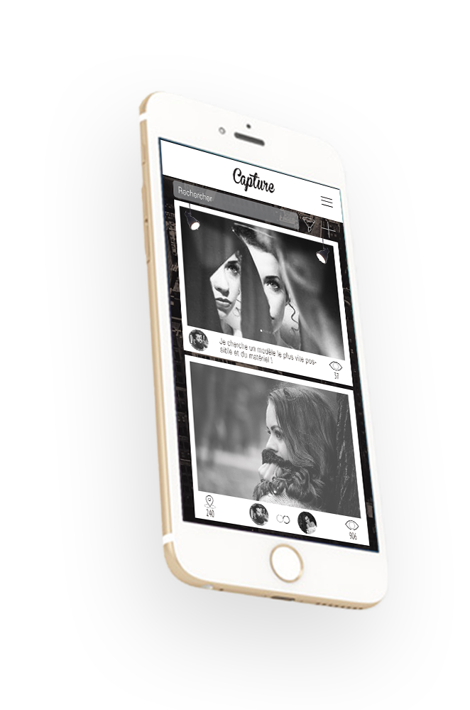

APPLICATION
Le projet « Capture » est le résultat d’un an de travail lors de mes études en Écriture
Multimédia à l’ISFSC. Pour cette application j’ai créé le graphisme, la communication,
l’ergonomie et le marketing du projet. « Capture » est un réseau social dédié aux
photographes à la recherche de modèles pour leurs créations.


Donner la possibilité aux photographes d’être d’avantage connectés, de pouvoir partager leur
travail, de faire la connaissance d’autres professionnels et de devenir ainsi de véritables
photographes du 21e siècle.

Stimuler la créativité des photographes en leur proposant de découvrir une nouvelle
dimension où la technologie amplifie l’aspect humain et fédère tous les utilisateurs entre eux.

Partir à la découverte de nouveaux spots photographiques, grâce à notre fonctionnalité « Spot
» qui utilise la réalité augmentée.